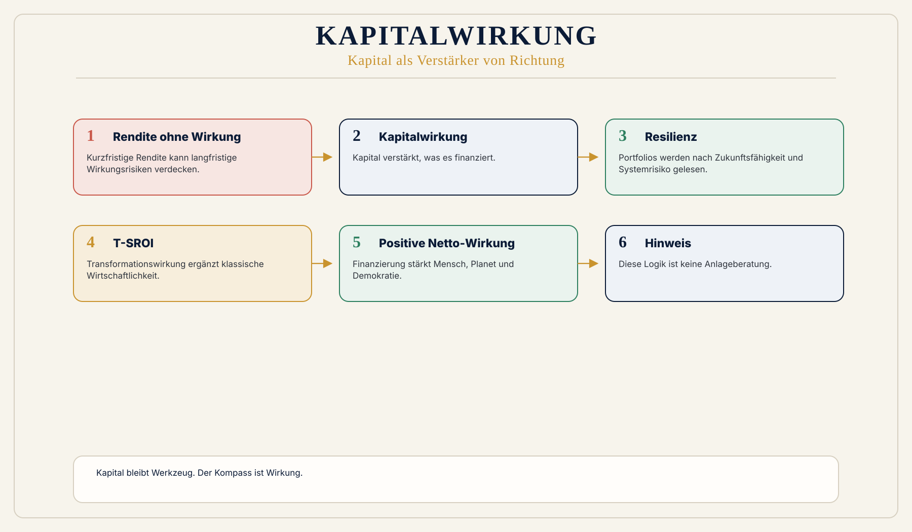

Trennung von Rendite und Wirkung
Die alte Kapitalmarktlogik trennt Rendite, Risiko und Wirkung zu stark.
 Wirkungsökonomie
Wirkungsökonomie
Für wen · Investor:innen und Kapitalmarkt
Kapital ist nicht das Problem. Das Problem beginnt, wenn Kapital zum Kompass wird.
Kapital kann Transformation beschleunigen, Infrastruktur finanzieren, Innovation ermöglichen und Resilienz aufbauen.
Es kann aber auch fossile Abhängigkeiten, Spekulation, soziale Spaltung, Desinformation und ökologische Schäden verstärken.
Deshalb fragt die Wirkungsökonomie nicht nur: Welche Rendite entsteht? Sondern: Welche Wirkung entfaltet dieses Kapital?
Kurz erklärt
Das Video zeigt, warum Kapital in der Wirkungsökonomie nicht verschwindet, sondern eine Richtung bekommt: weg von blinder Rendite, hin zu Wirkung, Risikowahrheit und tragfähiger Transformation.
Warum diese Perspektive wichtig ist
ESG-Daten zeigen Risiken, aber nicht automatisch positive Netto-Wirkung. Ein Portfolio kann ESG-kompatibel wirken und trotzdem kaum Transformation erzeugen.
Rendite kann kurzfristig steigen, während Wirkungsrisiken wachsen. Stranded Assets, Lieferkettenrisiken, Klimarisiken, Demokratierisiken, Plattformmacht und soziale Instabilität sind keine weichen Werte. Sie sind harte Zukunftsrisiken.
Was heute falsch läuft
Die alte Kapitalmarktlogik trennt Rendite, Risiko und Wirkung zu stark.
Wirkung erscheint als Zusatz, Reputationsfaktor oder Nachhaltigkeitslabel.
Kapital wird dort allokiert, wo erwartete Rendite entsteht, nicht zwingend dort, wo positive Netto-Wirkung und Resilienz aufgebaut werden.
Warum Reparatur nicht reicht
ESG-Ratings zeigen Daten, Risiken und Anbieterlogiken. Sie beweisen aber nicht automatisch positive Netto-Wirkung. Renditelogik kann Kapital dorthin lenken, wo kurzfristig Ertrag entsteht, während systemische Wirkungsrisiken wachsen.
Die WÖk liest Kapital als Verstärker von Richtung: Entscheidend ist, welche Wirkung Geschäftsmodelle, Infrastrukturen und Kapitalflüsse über Zeit entfalten.
WÖk-Verschiebung
Die WÖk liest Kapital als Wirkungskraft. Kapital ist gespeicherte Handlungsmöglichkeit. Es verstärkt, was finanziert wird.
Kapitalflüsse müssen nach Wirkung, Risikowahrheit und Transformationsfähigkeit bewertet werden. T-SROI fragt nicht nur nach sozialem Zusatznutzen, sondern nach systemischer Transformationswirkung: verändert die Investition Pfade, Standards, Märkte, Resilienz oder künftige Entscheidungen?
Konkreter Gewinn
Was nicht passiert
Diese Seite ist keine Anlageberatung und ersetzt keine individuelle Risikoanalyse.
Die WÖk bewertet keine Personen.
Sie fordert nicht, dass Rendite verschwindet. Sie ordnet Rendite als Folge tragfähiger Wirkung ein.
Wirkungspfad
Konkretes Beispiel
Ein Fonds investiert in ein fossil rentables Geschäftsmodell. Kurzfristig kann die Rendite hoch sein. Wirkungsökonomisch wächst aber ein Bündel aus Klimarisiko, Regulierungsrisiko, Versicherungsrisiko, Reputationsrisiko und demokratischem Folgerisiko.
Drei Instrumente
Die WÖk übersetzt Kapitalwirkung in drei anschlussfähige Bewertungsgrößen. Sie ersetzen die Finanzanalyse nicht, sie ergänzen sie um die Dimension, die heute fehlt.
Die Wirkungsrendite, also der bewertete Beitrag einer Anlage zur Netto-Wirkung auf Mensch, Planet und Demokratie, wird neben der Finanzrendite ausgewiesen. Ein Portfolio hat damit zwei Ergebniszeilen statt einer.
Begriff WirkungsrenditeNach dem Prinzip der Reverse Merit Order zählt nicht der Durchschnitt über alle Wirkungsfelder, sondern zuerst das schwächste Feld. Ein einzelnes tief negatives Feld, etwa Lieferkette oder Klima, ist ein Frühwarnsignal, das ein guter Durchschnitt nicht wegmitteln darf.
Reverse Merit Order ansehenDer wahre Preis, also Marktpreis plus die heute auf Dritte ausgelagerten Folgekosten, korrigiert Geschäftsmodelle um verdeckte Kosten. Je größer die Lücke zwischen Marktpreis und wahrem Preis, desto größer das Repricing-Risiko, wenn Regulierung oder Haftung diese Kosten zurückholen.
Begriff ehrliche PreiseModellrechnung · Demo
Hinweis: Die folgenden Zahlen stammen aus den öffentlichen Beispiel-Scorecards der Wirkungsökonomie. Es ist eine Modellrechnung zur Illustration der Methode, kein empirischer Messwert und keine Anlageempfehlung.
Ein Fast-Fashion-T-Shirt kostet im Markt 7,99 Euro. Die Beispiel-Scorecard weist einen wahren Preis von 13,42 Euro aus, also 5,43 Euro ausgelagerte Folgekosten:
Für Investor:innen heißt das: Rund 40 Prozent des wahren Preises dieses Geschäftsmodells sind Kosten, die heute nicht in der Kalkulation stehen. Jede Regulierung, Haftung oder Preisbildung, die einen Teil davon zurückholt, verändert Marge und Bewertung. Das Delta zwischen Marktpreis und wahrem Preis ist damit eine Risikokennzahl, die klassische Kennzahlen nicht zeigen.
Abgrenzung
ESG-Ratings messen überwiegend, welche Nachhaltigkeitsrisiken auf das Unternehmen wirken, und sie messen Prozesse und Berichtsqualität. Die WÖk misst umgekehrt, welche Netto-Wirkung ein Geschäftsmodell nach außen erzeugt, und bewertet sie über das schwächste Feld statt über einen Durchschnittsscore.
Die WÖk ersetzt ESG-Daten nicht. CSRD- und ESRS-Daten, also die europäischen Berichtspflichten und Berichtsstandards, bleiben wichtige Datenquellen. Sie werden aber in eine Wirkungslogik übersetzt statt in ein Label.
Einstiege
Das vertiefte Wirkungsfeld mit Wirkungskrediten, Fondslogik, Kapitalteilhabe und ESG-Anschluss.
Wirkungsfeld öffnenPortfolio-Wirkungsrating, Kapitalwirkungscheck und weitere Instrumente zum Durchrechnen der Logik.
Portfolio-Wirkungsrating öffnenUnbepreiste, korrelierte Risiken greifbar gemacht: Modellrechnung für Fahrzeug-, Gebäude- und Geschäftsmodell-Strandung - mit Erklärvideo.
Strandungsrisiko durchspielenMethodik kommentieren, Anwendungsfälle einbringen oder den Austausch mit dem WÖk-Team suchen.
Kontakt und MitmachenVisual
Kapitalfluss teilt sich in zwei Richtungen: Extraktion / Wirkungslast und Regeneration / positive Netto-Wirkung. In der Mitte: Wirkungsprüfung und T-SROI.

Vertiefung
Die nächste Frage lautet nicht, wie diese Zielgruppe nachhaltiger wird. Sie lautet: Welche alte Steuerungslogik erzeugt das Problem, und wie verändert Wirkung die Logik selbst?
Weiterlesen im Journal
Quellenbasis / Einordnung